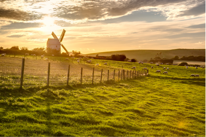

National Site >>
HOME
BRANCH NEWS
WHATS ON
CONTACT US
Welcome to the website of
Hassocks & Hurstpierpoint Labour Party
Join our growing movement >
 We meet every month at
Adastra Hall, Keymer Road, Hassocks BN6 8QH
Vist our facebook page for current events
Email us
Share your love of the Labour Party on twitter